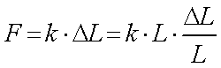
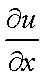
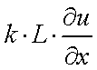
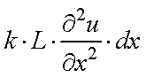
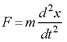
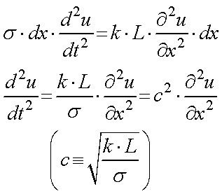

バネの自由落下における最下端の位置変化について，計算-1
さて，実際に実験をしてみると，確かにバネ最下端は静止していることがわかります？
なぜか？と考えることが重要です．
定性的には，
重力によるバネの落下（下向きの変位）
バネののびが戻る際の上向きの変位
このバランスがちょうどとれて，静止していることが思い浮かびます．
では，計算はどうするのでしょう？
これは．．．私の力では全くできません．
しかし，きちんと計算して解いてくれている方がおりました．
ですので，以下の計算は，全く私のオリジナルではなく，上記のサイトをなぞったものです．
計算していただいた方，ありがとうございました．
・ バネの波動方程式
バネに伝わる縦波の変位，u(x,t)，を考えましょう．
これは，自然長の時に位置，ｘ，にあった部分がｘ方向に，u(x,t)，だけ移動していることを示します．
ここで，ばね定数，ｋ，線密度，σ，を使います．
自然長，L，のバネに張力，F，を加えた時ののびを，ΔL，とすると，

と定義されます．
ひずみ，

，対する力は，
であり，xとx+dxとの間に働く力は，（その微分となり），
となります．また，力は，

となりますので，

を得ることができます．
なんか．．．拡散方程式に似ていますね．